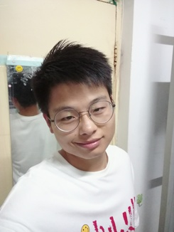
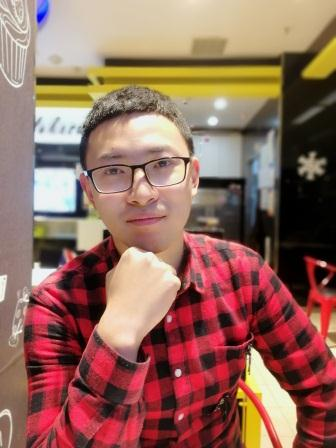
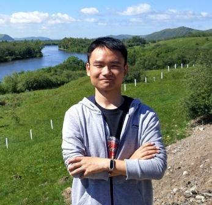

黄华国，教授, 教育部新世纪优秀人才
邮箱：huaguo_huang@bjfu.edu.cn
电话：（010）62338133
2001年毕业于北京林业大学林学专业；2004年毕业于北京林业大学森林经理专业3S技术方向获硕士学位。2007年毕业于中国科学院遥感应用研究所地图学与地理信息系统专业，获博士学位。2007年至今在北京林业大学林学院工作。2009年度入选“北京市科技新星计划”。2010年入选教育部“新世纪优秀人才支持计划”。2012年3月至2013年3月在美国弗吉尼亚理工大学访问一年。 研究方向为林业定量遥感，主攻全谱段三维遥感模型，代表性成果为RAPID模型系列（RSE，2013;CJRS, 2013;RS, 2018,RSE 2018）。主讲森林抽样调查技术（本科）、现代林业信息技术和植被定量遥感（研究生）课程。 主持多项国家级课题（包括3项国家自然科学基金），共发表学术论文 50 余篇，包括遥感顶级SCI期刊6篇。曾获教育部霍英东教育基金会高等院校青年教师三等奖1项、中国林学会梁希青年论文二等奖2项。担任SCI期刊《Forest Ecosystems》副主编和《北京林业大学学报》编委；担任《Remote Sensing》Guest Editor。
邮箱：chenling8247@126.com
电话：（010）62338133
2004年本科毕业于兰州大学地图学与地理信息系统专业；2007年硕士毕业于兰州大学水文与水资源工程专业；2012年博士毕业于北京师范大学地图学与地理信息系统专业。2012年至今在北京林业大学林学院工作。2017年8月至2018年8月在美国波士顿大学访问一年。目前研究方向为林业遥感，最新研究成果为高分影像结合机器学习算法和辐射传输模型进行树种识别及结构参数估算。主讲两门本科课程：森林资源监测与管理、信息采集（本科）；两门研究生课程：植被定量遥感、林业遥感理论与技术方法。曾获北京林业大学本科教案比赛二等奖。主持一项国家自然科学基金和一项中央高校基本科研业务费专项资金，已结题；目前重要参与3项国家自然科学基金面上项目，共发表学术论文10余篇。
邮箱：shenqin2017@bjfu.edu.cn
电话：（010）62338133
2008年本科毕业于华中农业大学林学专业，2015年获中国科学院大学理学博士学位。主要研究方向是林业遥感应用。在《Catena》、《Ecohydrology》、《Journal of Hydrology》、《Science of the Total Environment》、《Land Degradation and Development》等学术期刊上发表SCI论文多篇。主持了一项中国博士后科学基金会与中国科学院联合资助优秀博士后项目，和国家自然科学基金青年科学基金。研究方向为生态遥感和河岸林遥感监测。
于强，博士后
邮箱：yuqiang@bjfu.edu.cn
电话：
2013年本科毕业于天津农学院林学专业，2013年至2015年在北京林业大学地图学与地理信息系统专业学习，2015年直接攻博并于2018年获得北京林业大学工学博士学位。主要研究方向为复杂生态网络分析、定量遥感应用。主讲地球系统科学概论和GIS原理与应用两门课程。在《Journal of cleaner production》、《Ecological indicators》、《Water》、《农业机械学报》等学术期刊第一作者发表学术论文10余篇。
漆建波，讲师
邮箱：
电话：
2012年本科毕业于北京师范大学，2019年博士毕业于北京师范大学，2016年-2018年在法国图卢兹第三大学CESBIO实验室DART辐射传输模型研究组师从Jean-Philippe Gastellu-Etchegorry教授进行三维辐射传输模型的研究。主要研究方向为植被结构参数测量与反演、三维场景重建以及真实结构三维辐射传输模型。 目前已获发明专利3项，在遥感领域重要学术期刊上发表SCI论文4篇，其中包括《Remote Sensing of Environment》等，提出并发展了基于光线追踪的真实结构辐射传输模型LESS（http://lessrt.org）;此外，开发的基于布料模拟的点云滤波算法CSF（https://github.com/jianboqi/CSF）被集成于多款开源和商业软件中,得到大量应用，《An Easy-to-Use Airborne LiDAR Data Filtering Method Based on Cloth Simulation》入选ESI（Essential Science Indicators）高被引论文。
黄侃，在读博士
邮箱：278941855@qq.com; KanHuang@bjfu.edu.cn
电话：（010）62338133
本科毕业于北京林业大学，硕士博士现就读于北京林业大学。研究方向为激光雷达在林业中的应用。
王景旭，在读博士
邮箱：wangjingxu_2016@bjfu.edu.cn
电话：（010）62338133
本科和硕士毕业于浙江农林大学。研究方向为热红外遥感林业应用方向。

林起楠，在读博士
邮箱：1056446928@qq.com; qinan_lin2017@bjfu.edu.cn
电话：（010）62338133
本科毕业于福建农林大学，硕士与博士就读于北京林业大学。研究方向为叶片及耦合的冠层辐射传输模型。

杜凯，在读博士
邮箱：593746682@qq.com
电话：（010）62338133
本科和硕士毕业于中南林业科技大学。研究方向为微波遥感方向。
李骁尧，在读博士
电话：（010）62338133
本科、硕士和博士就读于北京林业大学。研究方向为植被辐射传输模型应用。
林思美，在读硕士
邮箱：1198625196@qq.com
电话：（010）62338133
本科毕业于北京林业大学，研究方向为森林火烧迹地恢复过程模型模拟。

马静怡，在读硕士
邮箱：1160240962@qq.com
电话：（010）62338133
本科毕业于沈阳农业大学。研究方向为激光雷达在林业中的应用。
王冰，在读硕士
邮箱：1397902693@qq.com
电话：（010）62338133
本科毕业于河南农业大学。研究方向为热红外遥感林业应用。
胡佩纶，在读硕士
邮箱：hupeilun1995@foxmail.com
电话：（010）62338133
本科毕业于北京林业大学。研究方向为激光雷达林业应用方向。

饶月明，在读硕士
邮箱：KevinShadow@163.com
电话：（010）62338133
本科毕业于福建农林大学。研究方向为冠层辐射传输模型的应用。